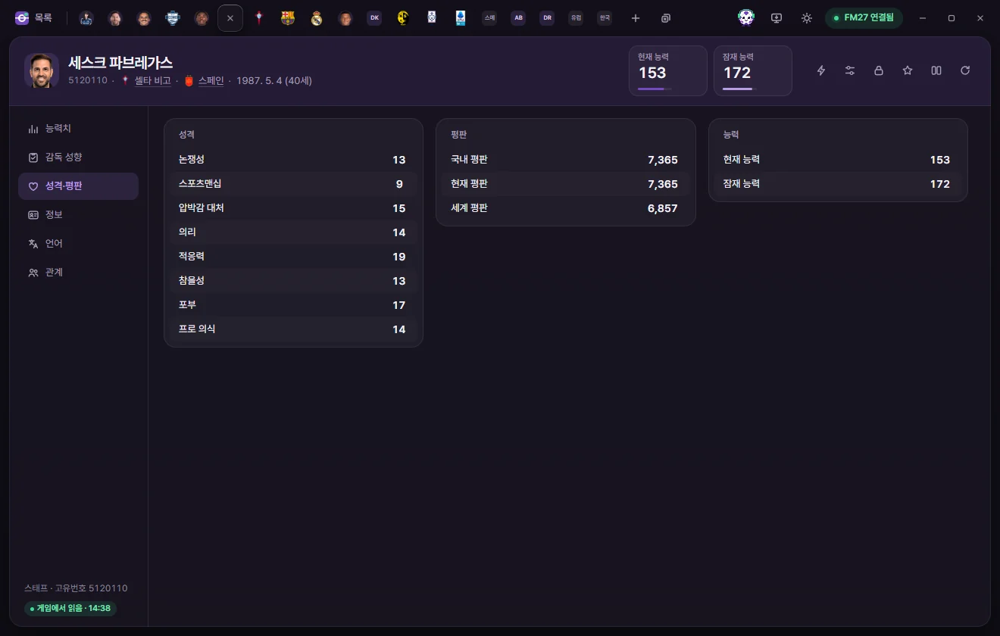
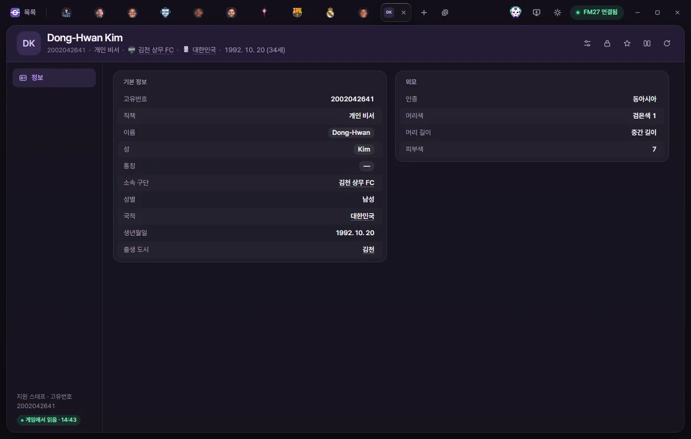

편집 탭
스태프·지원 스태프
감독·코치·스카우트 같은 스태프의 능력치, 감독 성향, 선호 포메이션, 계약을 고치고, 지원 스태프(개인 비서·언론 담당자 등)의 정보를 보는 방법입니다.

탭 여는 법
스태프 목록이나 지원 스태프 목록에서 이름을 누릅니다. 구단 탭의 '스태프' 페이지에서도 열 수 있습니다. 탭 머리, 값 고치기, 저장은 선수 탭과 같습니다. 선수 페이지의 공통 설명을 먼저 읽어 주세요.
스태프 탭 머리
- 이름 아래에 고유번호, 소속 구단, 국적, 생년월일(나이)이 보입니다. 이적이 합의된 사람은 '이적 예정', 은퇴 날짜가 정해진 사람은 '은퇴 예정'이 보입니다.
- 숫자 카드는 현재 능력과 잠재 능력(각 1~200)입니다. 눌러서 바로 숫자를 칩니다.
- 오른쪽 단추는 ⚡ 게임 에디터 기능, 프리셋, 고정, 즐겨찾기, 비교, 게임에서 다시 읽기입니다. 스태프의 ⚡ 메뉴에는 이적, 대표팀, 국적·출생 도시·성별 바꾸기, 은퇴 날짜가 있습니다. 항목 설명은 게임 에디터 (⚡)에 있습니다.
스태프 탭의 하위 페이지는 능력치, 감독 성향, 성격·평판, 정보, 언어, 관계 6개입니다.
능력치
모두 1~20이고, 묶음 안에서 가나다순입니다. 묶음 제목 옆 숫자는 평균입니다.
| 묶음 | 칸 |
|---|---|
| 코칭 | 공격 코칭, 수비 코칭, 피트니스 코칭, 골키퍼 코칭, 멘탈 코칭, 전술 코칭, 기술 코칭, 세트피스 코칭, 유망주 육성 |
| 정신 | 의지력, 규율 수준, 선수 관리, 동기 부여 |
| 지식 | 선수 능력 판단, 선수 잠재력 판단, 스태프 능력 판단, 협상, 전술 지식 |
| 의료·분석 | 물리치료, 스포츠 과학, 데이터 분석 |
| 구단주·회장 | 사업 수완, 간섭, 인내심, 재력 |
감독 성향

| 묶음 | 칸 | 범위 |
|---|---|---|
| 감독 성향 | 공격 성향, 직선 플레이 성향, 압박 성향, 영입 성향, 심리전, 수비 라인 깊이 성향, 전술 유연성, 훈련 강도, 로테이션 성향, 템포 성향, 폭 성향 | 1~20 |
| 선호 포메이션 | 선호 포메이션, 두 번째 선호 포메이션, 수비적 포메이션, 공격적 포메이션 | 포메이션 목록 |
| 선호 포메이션 | 미소유 시 선호 포메이션, 미소유 시 두 번째 포메이션, 미소유 시 수비적 포메이션, 미소유 시 공격적 포메이션 | 포메이션 목록 |
포메이션 목록에는 4-4-2, 4-3-3 DM 넓게, 4-2-3-1 DM AM 와이드, 5-2-2-1 DM AM 같은 19가지와 '정하지 않음'이 있습니다. '미소유 시'는 공을 갖지 않았을 때의 포메이션입니다.
성격·평판
| 묶음 | 칸 | 범위 |
|---|---|---|
| 성격 | 논쟁성, 스포츠맨십, 압박감 대처, 의리, 적응력, 참을성, 포부, 프로 의식 | 1~20 |
| 평판 | 국내 평판, 현재 평판, 세계 평판 | 0~10000 |
| 능력 | 현재 능력, 잠재 능력 | 1~200 |
정보


기본 정보
| 칸 | 하는 일 | 고칠 수 있는 범위 |
|---|---|---|
| 고유번호, 전체 이름 | 보기만 | |
| 이름, 성, 통칭 | 눌러서 글자를 고칩니다. 이름과 성은 비울 수 없습니다 | 60자까지 |
| 국적, 출생 도시 | 연필 단추로 고릅니다. 저장을 누르면 게임 자체 기능으로 바꿉니다(처음 한 번 백업 여부를 묻습니다) | 나라·도시 목록 |
| 소속 구단, 직전 구단 | 누르면 구단 탭이 열립니다 | 보기만 |
| 성별 | 바꾸려면 ⚡ 메뉴의 '여자로 바꾸기', '남자로 바꾸기'를 씁니다 | 보기만 |
| 생성 인물 | 게임이 만든 스태프인지 | 보기만 |
| 은퇴 예정 | 이번 시즌이 끝나면 은퇴합니다 | 예, 아니요 |
| 현재 구단에서 활동 후 은퇴 | 지금 구단을 떠날 때 은퇴합니다. 게임이 스태프를 이 표시대로 은퇴시키는지는 아직 시험하지 않았습니다 | 예, 아니요 |
| 생년월일 | 바꾸면 나이도 바뀝니다 | 날짜 |
| 키 | cm, 0은 없음 | 151~212 |
다른 국적 목록은 + 더하기로 나라를 더하고 −로 뺍니다.
외모
언어 번호(보기만), 인종, 머리색, 머리 길이, 피부색(0~20), 체형입니다. 선택지는 선수와 같습니다(선수 외모).
계약
| 칸 | 하는 일 | 고칠 수 있는 범위 |
|---|---|---|
| 직무 | 감독, 코치, 수석 스카우트, 팀닥터 등 | 보기만 |
| 주급 | 설정에 따라 월급·연봉으로 보입니다 | 0~1억 파운드 |
| 계약일, 계약 만료일, 입단일 | 계약 날짜 | 날짜 |
언어
선수와 같습니다. 수준(0~10)을 눌러 바꾸고, 구사 못 함·구사하게, + 더하기, −를 씁니다. 모국어는 목록에 없습니다. 선수 언어
관계
선수와 같습니다. 좋아하는·싫어하는 인물과 구단은 종류·이유·수치(0~100)·영구를 고치고, 빼고, 빈자리가 있으면 더할 수 있습니다. 선수 관계
지원 스태프


지원 스태프는 감독에게 붙는 언론 담당자, 선수 연락 담당자, 개인 비서입니다. 게임에는 이 사람들의 프로필 화면이 없어서, 게임 안에서는 고유번호를 볼 수 없습니다. 얼굴 그래픽을 붙일 때 이 탭의 고유번호를 쓰면 됩니다.
- 머리에는 숫자 카드가 없고, ⚡ 단추도 없습니다.
- 이름 아래에 직책, 소속 구단, 국적이 보입니다.
| 칸 | 하는 일 | 고칠 수 있는 범위 |
|---|---|---|
| 고유번호 | 그래픽(얼굴 사진)을 붙일 때 쓰는 번호 | 보기만 |
| 직책 | 언론 담당자(기자회견 안내), 선수 연락 담당자(팀 미팅·행동 규칙 안내), 개인 비서, 내 개인 비서 | 보기만 |
| 이름, 성, 통칭 | 눌러서 글자를 고칩니다 | 60자까지 |
| 소속 구단 | 구단 감독의 지원 스태프는 그 구단입니다. 국가대표팀 감독의 지원 스태프와 내 개인 비서는 비어 있습니다 | 보기만 |
| 성별, 국적, 생년월일, 출생 도시 | 보기만 | |
| 외모 (인종, 머리색, 머리 길이, 피부색) | 보기만 |
'내 개인 비서'는 내 감독에게 따로 붙는 개인 비서입니다. 감독과 국적이 같고, 받은편지함에 개인 비서로 나오는 사람입니다. '개인 비서'(56번)는 구단·국가대표팀 감독 자리에 붙는 개인 비서로 맞췄지만, 게임에서 직접 확인하지는 않았습니다.